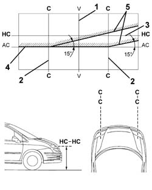
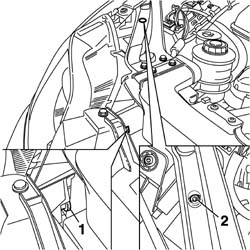
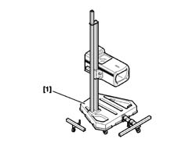

5540B38 HEADLAMP/LIGHT CLUSTER LIGHT BEAM - POSITION
- Path
- Procedures > 55 ELECTRICAL EQUIPMENT > 5540 EXTERIOR LIGHTING > 5540B HEADLAMPS > 5540B38 HEADLAMP/LIGHT CLUSTER LIGHT BEAM - POSITION
- Kind
- repair procedure (removal / refitting; the operation number is the code)
- Applies to
- all engines; all production periods
- Interactive page
- https://sloeber94.github.io/elrnDB-fUlss/en/#/179007575
Applies to: all engines; all production periods
- Position the vehicle complete with spare wheel, tools, fluids, fuel reserve.
- Remove any mud, snow or ice that has accumulated which could affect the geometry of the vehicle.
- Check that the tyre inflation pressure is correct.
- Place the headlamp alinment control switch in position 0.
- Place the vehicle on a flat surface, perpendicular to a screen with an opaque surface 10 metres away on which the following lines are traced.
1. V - V: vertical, corresponding to the trace of vehicle plane of symmetry.
2. C - C: traces of vertical planes passing through the reference centres of the light clusters.
3. HC - HC: horizontal corresponding to the height from the ground of the reference centres for the light clusters.
4. AC - AC: horizontal 10 cm below the line HC - HC. (figure for new vehicles corresponding to a decrease of 1%)
5. Lines inclined by 15° as illustrated in the diagram.

Applies to: all engines; all production periods
- Switch on the dipped headlamps.
1. Vertical alignment.
- Adjust the vertical adjustment screw for the light cluster so that the horizontal section of the demarcation line between the dark zone and the area lit up by the light band is aligned with the line AC - AC traced on the screen.
2. Horizontal alignment.
- Adjust the horizontal adjustment screw for the light cluster so that the point where the two horizontal and inclined demarcation lines cross with the point where lines C - C and AC - AC cross on the screen are aligned.

Applies to: all engines; all production periods
- Optical devices that reproduce the effects on a screen 10 metres away can be used to speed up the operations of aligning the light clusters.
- The reference lines conforming to the values for various vehicles should be on the screen for these devices.
- The use of these devices is permitted as long as they are periodically checked with the vehicle lights directed at a screen 10 metres away.
1. Use the appropriate equipment as described in the user manual for the headlamp alignment equipment.
 | Description | Code | Function |
|---|---|---|---|
1 | Digital headlamp alignment equipment | 1.806.095.001 | Light cluster light beam alignment |
